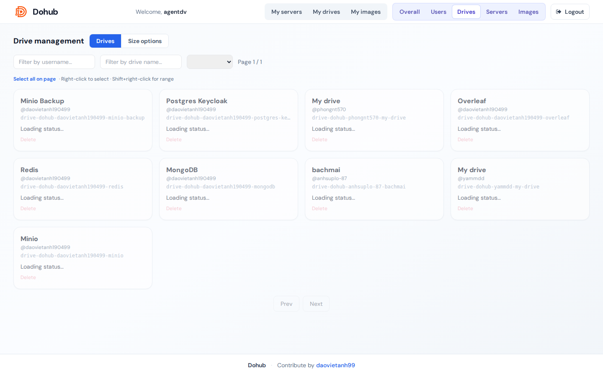

Tab admin Drives có hai sub-tab: Drives và Size options.

Drives
- Filter: username, drive name, resource group.
- Thẻ drive hiển thị owner, size, trạng thái bound.
- Delete — xóa drive user (cẩn trọng nếu đang dùng).
- Bulk: chọn nhiều → Delete / Clear.
Size options
Catalog kích thước drive trong form Create drive:
- Thêm size: ô
e.g. 100Gi → Add size.
- Ẩn/hiện hoặc xóa option có sẵn.